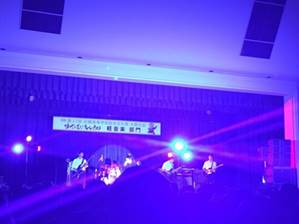
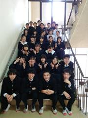
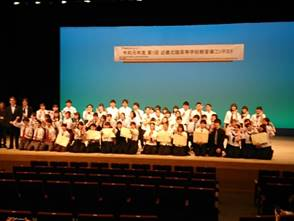

メッセージ
ギター部という名称ですが、ロックやポップスなどの軽音楽を演奏しています。 「清く、正しく、ロックンロール」を合い言葉に、より大きなステージで多くの人に向けて演奏できるよう、日々練習に励んでいます。 バンド単位での練習が中心と思われがちですが、部員全員、あるいは各パートでの練習も重視し、全員でより良い演奏を目指しています。
ギター部 YouTubeチャンネル
- 
- 
- 
部活内容
本校ギター部は高等学校軽音楽連盟兵庫に加盟し、連盟主催イベントを中心に各種コンテスト・地域イベント・自主企画を含めた各種ライブに出演しています。
※予定は随時更新していきます。
部員数
全５３名
１年生 １８名
２年生 １８名
３年生 １７名
2022年度 出演予定ライブ
4月28日(木)
蜻蛉祭（本校）
5月7日(土)
３年生引退ライブ
5月28日(土)・29日(日)
西播磨地区合同ライブ（姫路あいめっせホール）
第67回ソニックHSライブ（神戸電子専門学校SonicHall）
7月
校内ライブ、全国大会東京大会兵庫県予選、西播地区合同ライブ
8月
部内ライブ、合同ライブなど
9月
第68回ソニックHSライブ（神戸電子専門学校SonicHall）
兵庫県総合文化祭合同発表会代表選考会
11月
兵庫県高等学校総合文化祭合同発表会（神戸ハーバーランド）
12月
第69回ソニックHSライブ（神戸電子専門学校SonicHall）
校内ライブ（本校・蜻蛉ホール）
1月
全国聡文県代表選考会、近畿フェス県代表選考会
3月
小野高校主催合同ライブ（本校・蜻蛉ホール）
西播地区合同ライブ（姫路あいめっせホール）
近畿軽音楽フェスティバル県代表選考会
全国軽音楽フェスティバル県代表選考会
これまでの主な入賞歴
近畿北陸軽音楽コンテスト本選出場
74回生 Temhota「零雨が降る夜に」（オリジナル）
同上 大会動画
75回生 フリーWi-Fi「My Sharona/TheKnack」
75回生 Král「Clear」（オリジナル曲）
大阪音楽大学 第４回ポピュラー・ミュージック・フェスティバル 本選選出
第46回兵庫県高等学校総合文化祭合同発表会軽音楽部門予選 優秀賞
75回生 ゲネイオン 「I wanna go where the people go/The Wildhearts」
全国高等学校軽音楽コンテスト県予選優秀賞
75回生 ノンフライポテト「Barracuda/Heart」
大阪音楽大学 第3回ポピュラー・ミュージック・フェスティバル 本選出場
74回生 ヴァネロペ 「Kick Start My Heart／Motley Crue」
第44回兵庫県高等学校総合文化祭合同発表会軽音楽部門予選 優秀賞
74回生 紙バンド 「Truth／T-スクエア」
高等学校軽音楽フェスティバル2020 洋楽カヴァー部門 優秀作品
73・74回生 「Fly me to the moon／Frank Sinatra」
きのかわ和歌山総文2021県代表選考会 優秀賞（第３位）
74回生 「零雨が降る街で」（オリジナル）
第2回近畿北陸高等学校軽音楽コンテスト本選出場→緊急事態宣言により中止。
大阪音楽大学 第2回ポピュラー・ミュージック・フェスティバル 本選出場
73回生 Directors 「American Idiot／Green Day」
兵庫チャレンジフェスタU18グランプリ 本選出場
73回生 Directors 「American Idiot／Green Day」
第1回近畿北陸高等学校軽音楽コンテスト 奨励賞
73回生 知能指数1300 「タイムマシーンにお願い／サディスティック・ミカ・バンド」
大阪音楽大学短期大学部ポピュラー・ミュージック・コース主催
ヴォーカルコンテスト 優勝ならびに大阪音楽大学賞・聴衆賞受賞
73回生 古川夕望 「罪と罰／椎名林檎」
近畿高等学校総合文化祭 県代表選出
71回生 Easel 「Trooper／Iron Maiden」
兵庫県高等学校総合文化祭合同発表会 県代表選出
70回生 「M / プリンセス・プリンセス」
2021年度 出演ライブ
4月
全国高等学校軽音楽フェスティバル2021 県代表選考会（オンラインにて）
4月28日(水)・29日(木・祝) -> 6月9日(水)
蜻蛉祭(本校)
5月2日(日)
北播地区高等学校合同ライブ（播磨中央公園）
5月29日(土)
第64回ソニックHSライブ（神戸電子専門学校SonicHall）
5月30日(日)
西播磨地区合同ライブ（姫路あいめっせホール）
6月20日(日)
74回生引退ライブ（本校・食堂）
8月
全国大会東京大会兵庫県予選（オンラインにて）
8月12日(木)
北播地区高等学校合同ライブ（播磨中央公園）
8月21日(土)
西播磨地区合同ライブ（姫路あいめっせホール）
8月27日(金)
校内ライブ（本校食堂）
8月28日(土)
大阪音楽大学主催ポピュラーミュージックフェスティバル本選
9月25日(土)
第65回ソニックHSライブ（神戸電子専門学校SonicHall）
9月26日(日)
兵庫県総合文化祭合同発表会代表選考会
11月16日(火)
文化部中間発表（本校・蜻蛉ホール）
11月20日(土)
兵庫県高等学校総合文化祭合同発表会（神戸ハーバーランド スペースシアター）
12月18日(土)
第65回ソニックHSライブ（神戸電子専門学校SonicHall）
12月24日(金)
校内ライブ（本校食堂・音楽部と合同）
1月7日(金)
全国聡文県代表選考会（明石市民会館中ホール）
3月
近畿軽音楽フェスティバル県代表選考会（オンライン）
全国軽音楽フェスティバル県代表選考会（オンライン）
3月21日(祝・月)
校内ライブ（本校）
3月29日(火)
西播磨地区合同ライブ（姫路あいメッセホール）
2020年度 出演ライブ
7月27日(月)
3年生引退ライブ（本校）
8月8日(土)
大阪音楽大学 第3回ポピュラー・ミュージック・フェスティバル 本選
8月12日(水)
北播地区３校合同ライブ（播磨中央公園野外ステージ 参加校：西脇・三木）
9月21日(月)
第62回ソニックHSライブ
9月22日(日)
兵庫県総合文化祭合同発表会代表選考会
11月7日(土)
北播地区３校合同ライブ（播磨中央公園野外ステージ 参加校：西脇・三木）
11月17日(火)
文化部中間発表（本校蜻蛉ホール）
11月21日(土)
兵庫県総合文化祭合同発表会（神戸ハーバーランド スペースシアター）
12月19日(火)・20日(日)
第63回ソニックHSライブ
12月25日(金)
校内ライブ
2月14日(火)
第2回近畿北陸高等学校軽音楽コンテスト（舞鶴総合文化会館大ホール）
→緊急事態宣言により中止。出演予定だった楽曲を公開しております。
74回生 ヴァネロペ 「Unupload」（オリジナル曲）
3月27日(土)
北播地区合同ライブ（播磨中央公園野外ステージ 参加校：西脇・三木・三木北）
3月31日(水)
西播磨地区合同ライブ（姫路あいメッセホール）